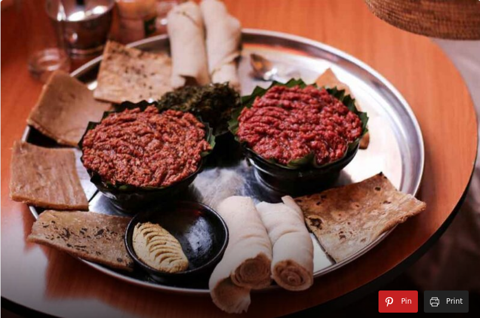

Kitfo Recipe

Description
Kitfo is a beloved beef dish in Ethiopia. Learn how to make Kitfo by using this simple recipe.Here you will learn about all the ingredients you will need to make every simple version of this traditional Ethiopian dish with all the necessary directions.
Ingridients
- 3 lbs beef, freshly grounded (without fat)
- ¼ cup niter kibbeh (Ethiopian clarified butter)
- 1 tsp korerima
- 1 tsp mitmita
- 1 tsp salt
Steps
- Begin by thoroughly mixing the ground beef with the korerima, mitmita, and some salt; then top it all off with the niter kibbeh.
- Then add the mix onto a pan or skillet and heat until the meat is cooked as your liking.
- Serve your Kitfo hot with Injera.